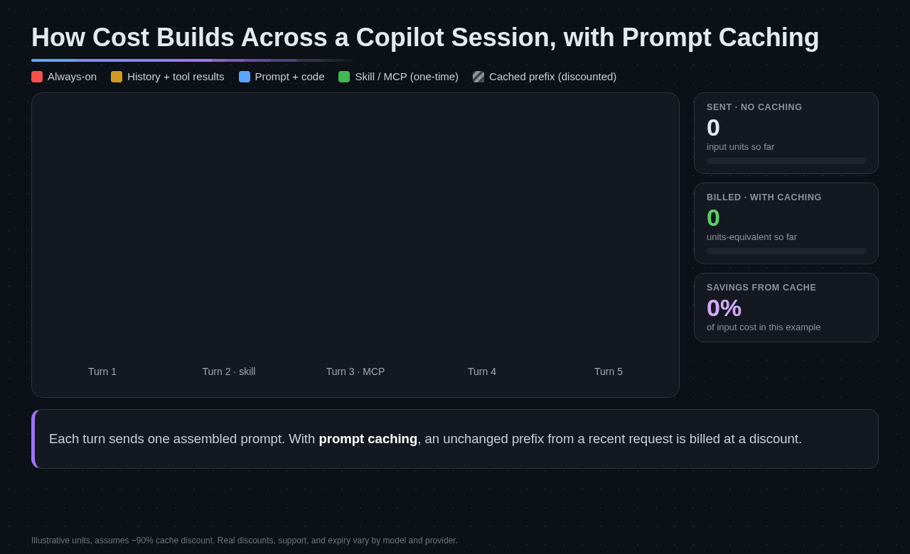

How the Prompt Cache Works
Caching lets an AI model store portions of a conversation's context so they don't need to be reprocessed on every request. […] cached tokens are typically billed at 10% of the normal input price.
Source: GitHub Docs, Optimizing your AI usageIn agentic work, the same large prefix (system prompt, instructions, tool definitions, file contents) is resent turn after turn. When the prefix matches the previous request, it is billed at the cached rate. The “typically 10%” is not universal: Claude Sonnet 5.5 caches at 5% of input and some models are higher, so check the model row before you quote a ratio.

What invalidates the cache
Switching models
A different model can't reuse another model's cache. Pick a model and stay on it for the session.
Changing settings mid-session
Changing reasoning effort, context size, or the set of enabled tools and MCP servers.
Returning after expiry
Caches expire after inactivity: 24 hours for OpenAI models and 1 hour for most others.
/compact first so a short summary is rebuilt instead of the full history.Continue, Fork, Compact, or Start Fresh
flowchart TD
S([Next prompt]) --> Q1{Same task or phase?}
Q1 -->|No| NEW[Start a new session]
Q1 -->|Yes| Q2{Exploring an alternative?}
Q2 -->|Yes| FORK[Fork the session]
Q2 -->|No| Q3{History large or cache cold?}
Q3 -->|Yes| CMP[Compact with a focus]
Q3 -->|No| CONT[Continue in place]
class S external
class Q1,Q2,Q3 neutral
class NEW azure
class FORK accent
class CMP warning
class CONT success
| Action | VS Code | Copilot CLI | Use when |
|---|---|---|---|
| Start fresh | Start a new session | /new or /clear | The problem or work phase changed |
| Fork | /fork, or Fork Conversation on an earlier request | /fork [NAME] | You want to try another approach with the same history |
| Compact | /compact [focus] | /compact [focus] | The thread is still relevant but its history is large |
| Side question | /btw <question> | /ask or /btw | A quick question that shouldn't enter the main history |
| Resume | Open the session from the sessions list | /resume or copilot --continue | The saved session still matches the task |
VS Code notes that stable context and forks can preserve prompt caching. A fork keeps the history, so it is the cheap way to explore an alternative without re-establishing context.
Compaction Is a Tradeoff
Compaction sends the conversation to the model for a structured summary, then replaces the old history with that summary plus your original instructions and current plans. Copilot CLI starts compacting automatically at about 80% of the context window and pauses briefly if it reaches about 95% before compaction finishes.
- Fine-grained details can be lost, and a completed compaction can't be reversed.
- In Copilot CLI,
/session checkpointslists the saved summaries;/session checkpoints 2shows one in full. - Compact a long, still-relevant thread before its next phase. Don't compact after every turn, and don't compact to keep an unrelated conversation alive.
Research, Plan, Then Implement
When research, planning, and implementation share one session, context grows fast and later phases carry exploration they no longer need. Split them:
- Research: explore the codebase, find the relevant files, and understand dependencies.
- Plan: produce a structured plan with a strong reasoning model. Use
/planin Copilot CLI or the Plan agent in VS Code. - Implement: start a new session and execute the plan with focused context and a model suited to execution.
Clean-Session Handoff
Starting fresh is cheap only if you don't have to re-derive what the last session figured out. Write six fields, ideally by asking the outgoing session to draft them, and paste them as the first message of the new session.
| Field | Contents |
|---|---|
| 1. Task and outcome | The one task in scope and what done produces |
| 2. Current state | What is implemented, verified, or ruled out |
| 3. Important files | The specific paths that matter, and nothing else |
| 4. Decisions | Choices already made, each with a one-line reason |
| 5. Constraints | APIs, versions, patterns, security rules, out-of-scope areas |
| 6. Next action and stop condition | The single next step and what stop looks like |
Key takeaway
Keep the handoff to about one screen. A handoff longer than the history it replaces defeats the purpose.
Next Steps
- Cap how much a single task can spend in AI Credit Session Limits.
- Practice plan, handoff, implement, and compact in Lab 03.